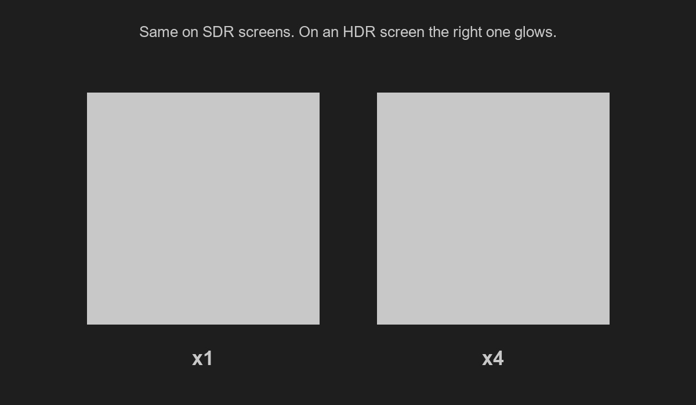

The files on this page are served as they are, so an HDR screen shows the real difference.
You need a phone or laptop with an HDR display, Safari or Chrome, and on iPhone Low Power Mode
off (it turns HDR off). On a regular screen both versions look the same.
Quick check

Both squares are identical in SDR. If the right one glows, your screen and browser show HDR.
The same photo, SDR and HDR
SDR, what an HDR photo turns into in Instagram StoriesHDR, the same photo as it looks in the Photos app
As an HDR video
HEVC 10-bit HLG. Instagram Stories keep HDR on video like this, which is what HDR Story makes from your photos.